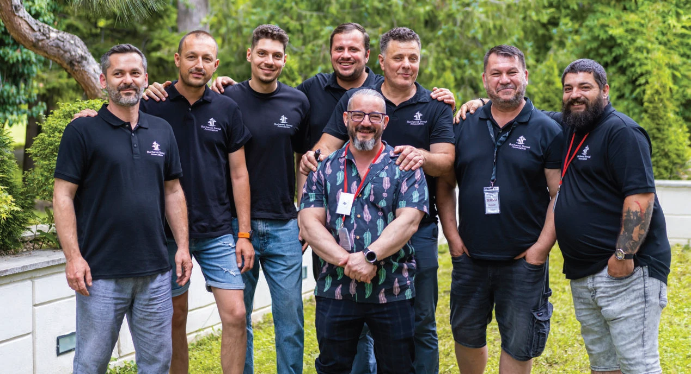

Despre Noi
O comunitate de oameni uniți de o pasiune comună, care au ales să aducă natura în ritmul alert al Bucureștiului.
Povestea noastră
Arta bonsai a fost, ani la rând, o prezență discretă și fragmentată în România. Pasionații lucrau izolat, iar publicul larg nu avea ocazia să vadă lucrări de calitate sau să înțeleagă procesul prin care poți obține un copac în miniatură.
Din dorința de a crea un spațiu de exprimare profesionist și de a cultiva un dialog autentic cu publicul, în anul 2018 am organizat prima ediție a expoziției noastre. A fost un moment definitoriu, un prim efort colectiv de a demonstra că bonsai este o artă contemporană, vie, ce merită o platformă de prezentare la standarde înalte. Succesul constant al fiecărei ediții a confirmat maturizarea grupului și necesitatea unei organizări formale.
Astfel, în anul 2024, înființarea Bucharest Bonsai Association (BBA) a reprezentat o consolidare firească a unei comunități care colabora deja de câțiva ani.
Astăzi, BBA reprezintă un punct de reper pentru această nișă în țară, încercând să-și facă simțită prezența din ce în ce mai mult în peisajul cultural urban.
Misiunea BBA
Misiunea noastră rămâne clară: educarea publicului prin calitate, ridicarea standardelor profesionale în România și organizarea unui cadru de dezvoltare pentru toți cei care vor să descopere arta bonsai.
Comunitate BBA

BBA nu este o organizație rigidă, ci o comunitate vie. Suntem ingineri, arhitecți, corporatiști, studenți sau antreprenori care au descoperit că au ceva în comun: pasiunea pentru detaliu și respectul pentru ritmul naturii.
Ceea ce ne definește este modul în care circulă cunoașterea. În Asociație învățăm unii de la alții fără ierarhii inutile. Credem că orice întrebare este un prilej de învățare pentru întregul grup, nu doar pentru cel care o rostește. Un tânăr de 20 de ani poate aduce o viziune proaspătă și curajoasă, în timp ce un membru cu experiență oferă rigoarea tehnică șlefuită în ani de studiu.
Indiferent de vârstă sau de parcursul profesional, ne întâlnim în jurul aceleiași mese de lucru în cadrul workshop-urilor. Disciplina artei bonsai se împletește firesc cu prietenia, transformând fiecare atelier într-un spațiu de creștere colectivă, atât pentru copaci, cât și pentru noi.
Activități
Ateliere și demonstrații publice
În ciuda contextului dominat de ecrane și informație digitală, credem că arta bonsai se remarcă și se învață cel mai bine prin contactul direct cu materia vie. Workshop-urile noastre reprezintă momente autentice, unde teoria și practica sunt inseparabile.
Focalizarea și echilibrul stau la baza rezultatelor atunci când vorbim despre arta bonsai. Intrăm într-o stare de atenție deplină, făcând astfel un exercițiu de „mindfulness” împreună cu toți participanții. Rezultatul se observă foarte repede la nivel psihic și emoțional, sub formă de claritate mentală și perspectivă nouă asupra modului în care interacționăm cu natura.
Rigoarea și expertiza sunt uneltele de bază pe care le oferim tuturor membrilor. Aceștia au acces la tehnici avansate de modelare și gestionare a tuturor aspectelor ce țin de dezvoltarea acestor plante. Toate tehnicile învățate sunt fundamentate pe principii sănătoase de horticultură, având totuși în vedere compoziția finală. Învățăm că este deosebit de important să înțelegem biologia plantei înainte de a-i sculpta forma.
Scopul final este evoluția colectivă. Atelierele oferă un mediu de lucru colaborativ, unde experiențele se împărtășesc generos. Progresul fiecărui exemplar este privit ca o reușită a întregii comunități, transformând studiul individual într-un demers de grup.
Ieșim constant în spațiul public pentru a arăta că arta bonsai este accesibilă. Prin demonstrații live în cafenele sau grădini urbane an de an, am validat interesul uriaș al publicului larg pentru acest domeniu. Aceste evenimente sunt puntea noastră de legătură cu orașul, transformând privitorii curioși în viitori practicanți.


Bucharest Bonsai Show (BBS)
Acesta reprezintă evenimentul nostru central, dedicat promovării și aprofundării artei bonsai în România. Expoziția își propune să reunească atât practicanți, colecționari și specialiști, cât și simpli iubitori de natură, poate străini acestei arte, oferind publicului larg o perspectivă clară asupra acestei discipline.
Obiectivul fundamental al expoziției este educația și schimbul de experiență. Prin expunerea de exemplare mature și prin demonstrații live, evenimentul facilitează înțelegerea proceselor de modelare și întreținere a bonsailor, îmbinând cunoștințele horticole cu viziunea artistică.
Bucharest Bonsai Show nu este doar o expoziție statică, ci un mediu plăcut, relaxant, ce oferă un context perfect pentru dialog între pasionați, vizitatori și expozanți.
Edițiile Bucharest Bonsai Show sunt găzduite, prin tradiție, de Grădina Botanică „Dimitrie Brandza” a Universității din București, un spațiu consacrat cercetării și conservării patrimoniului vegetal, unde an de an câteva mii de vizitatori ne trec pragul entuziasmați.


Expoziția de bază constă într-o selecție de peste 80 de arbori din diverse specii, atât autohtone, cât și exotice, care ilustrează diversitatea formelor unor copaci bătrâni din natură, păstrând standardele de estetică specifice acestei arte.
Demonstrațiile tehnice nu lipsesc la nicio ediție. Organizăm sesiuni de lucru în timp real, susținute de membri ai asociației sau invitați cu experiență, prin care sunt explicate anumite etape de transformare și rafinare ale unor exemplare, în procesul lor de a deveni bonsai.
Promovăm consultanța și dialogul cu toți vizitatorii care ne adresează întrebări. Expoziția devine un spațiu de comunicare dedicat inițierii teoretice și practice, menite să ofere soluții concrete pentru îngrijirea bonsailor în condițiile climatice locale.
Evenimentul promovează o abordare responsabilă față de natură și încurajează dezvoltarea unei comunități de pasionați capabili să perpetueze această veche tradiție, dar într-un cadru contemporan.


De ce să colaborezi cu noi
Bucharest Bonsai Association colaborează cu instituții culturale și parteneri cu care împărtășim aceleași valori: promovarea domeniului artistic, comunitatea și respectul față de mediul înconjurător. Fiecare parteneriat reprezintă pentru noi o nouă ramură de dezvoltare și suntem mereu în căutarea unor viziuni care să rezoneze cu ale noastre.
Pe această cale, le mulțumim tuturor celor care ne susțin constant în organizarea expozițiilor și atelierelor noastre și vă invităm să ne contactați dacă doriți să ne susțineți în promovarea artei bonsai în România.
Ce oferim?
- Workshop-uri: experiențe unice axate pe concentrare, răbdare și creativitate.
- Asocierea cu un domeniu de nișă, concentrat pe partea vizuală și foarte „instagramabil”.
- Expunere: posibilitatea de a instala standuri în cadrul expozițiilor și evenimentelor noastre cu trafic intens.
Ce căutăm?
- Sponsorizări logistice: sprijin pentru transportul arborilor, materiale profesionale (unelte, sârmă, substrat) sau închirierea spațiilor de expoziție.
- Finanțare pentru invitați externi: fonduri pentru a aduce maeștri internaționali care să susțină cursuri de perfecționare.
- Parteneriate de locație: spații pentru expoziții sau ateliere de lucru.
Suntem gata să creștem împreună. Dacă rezonați cu viziunea noastră despre natură, artă și comunitate, nu ezitați să ne contactați.
Copyright © Bucharest Bonsai Association. All rights reserved | This template is made with by Colorlib